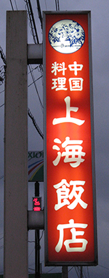

Shanghai Chinese Restaurant
Just across Nagasaki Prefecture’s border, about a ten minute drive from Nagasaki’s own Hasami, lies the town of Arita. Part of Saga Prefecture, Arita is world-renowned for its beautiful hand-crafted pottery. While I appreciate Arita for its pottery (though most of it is far above my pay grade), I appreciate it even more for a little Chinese restaurant called Shanghai. While Nagasaki City boasts one of only three Chinatowns in Japan and, therefore, some great Chinese restaurants, it’s a bit far to travel for those of us in the northern parts of Nagasaki Prefecture that develop a sudden craving for delicious Chinese food. When just such a craving hits, I recommend making the journey across the prefectural border and going to Shanghai.
Food
When judging a restaurant, food has to come first. Evaluations of price, service, and ambience are important too, but if the food in the restaurant isn’t even worth eating, I don’t care how friendly the staff is or how cheap the food is.
Eggplant with Sesame Seed Sauce
So how’s the food at Shanghai?
Put simply: it’s delicious. I have enjoyed everything I have eaten there. Let me start by telling you about the item that I order every time I go there. I see almost every other customer order it and I recommend you order it too. It’s called nasu no goma-dare なすのごまだれ or Eggplant with Sesame Seed Sauce. It’s soft, pan-fried eggplant that is tempura-ed on one side with a slightly sweet sesame seed sauce reminiscent of peanut butter. It might sound strange at first, but trust me on this one. Even if you’re not a fan of eggplant, you’ll probably love it. It’s amazing.
Fried Gyoza. You can't go wrong.
Shanghai’s other dishes are certainly not lacking at all. Their fried gyoza are excellent, though I don’t think you could ruin gyoza if you tried. The sweet and sour pork is great too, even if the pork can be a little tough at times. The fried rice is also very good, but is perhaps a little bland compared to other restaurants.
There’s plenty more on the menu I haven’t had the pleasure to try personally. I imagine they are all delicious as well. The four dishes I listed above are enough reason to take a trip there (in fact, those four are a perfect meal if shared between two people).
Service
A restaurant can get by resting only on the laurels of its food quality, but without decent service, it’s not bound to be an enjoyable experience. The quality of service at Shanghai is as good as any restaurant in Japan. The staff is very friendly and if the restaurant is not too busy, you’ll likely receive a complimentary dessert. The speed of the service naturally depends on how busy the restaurant is. In between normal meal hours, you’ll be seated immediately or after a short wait, and the food will come out within ten minutes of ordering it. However, dinner hours, even on weekdays, can be quite busy, so be prepared to wait a little longer to both be seated and receive your food.
I have only experienced one case of poor service. During a particularly busy dinner rush, the waitress forgot to bring out two cokes that I had ordered, forcing me to eventually ask if they were coming. She realized her mistake, brought them out immediately, and told us they were on the house. More than rectified, if I say so myself.
Price
I know what you’re thinking: “Delicious food and great service are nice, but not if it bankrupts me!” Worry not, my friend, because Shanghai is very reasonably priced. Most dishes range from ¥500 to ¥1000. One person should not have to pay much more than ¥1500 for a filling meal. In Japan, I would say that’s pretty good.
Ambience
Finally, allow me to give you a feel for the atmosphere you will be dining in when you go to Shanghai. Looking around the restaurant, you will notice the tatami and walls are a little tattered. There may even be some dirt in the corners. Indeed, the floor might not be spotless, but their porcelain dishes are always pristine, so a little dirt in other places doesn’t bother me. It has a hole-in-the-wall feel to it, but that’s not to its detriment. It isn’t supposed to be a ritzy place, and its down-to-Earth nature gives it charm. For example, you’ll see the following piece of artwork made by local high school students on the wall:
Wall Art
Take a closer look when you’re there. It’s pretty cool. You get the feel the staff at Shanghai are more concerned with making great food and providing excellent service than replacing tatami and painting walls. Which would you rather have?
Location
Shanghai is located on Route 35 not far from Arita JR Station. Refer to the following map for its exact location. You’ll know you’re there when you see the red sign.

View larger map
上海飯店
Shanhai Hanten
佐賀県西松浦郡有田町南原丁53
Saga-ken, Nishimatsuura-gun,
Arita-cho, Nabara-cho 53
Tel: 0955-42-3901
So, next time you’re craving some delicious Chinese food or if you just happen to be in Arita, stop by Shanghai for lunch or dinner. You won’t regret it.
Enjoy!
-Chris Breiding